The .Swarm Protocol
Minimal, git-native, markdown-first agent orchestration for multi-repo organizations.
Multi-Actor Coordination: A Common Problem¶
Modern software teams use multiple AI coding agents simultaneously across different platforms. Without coordination:
- Two agents work on the same task simultaneously
- Context is lost when chat history is compacted
- Non-obvious decisions (why approach A over B) disappear forever
- No agent knows what the previous agent did or decided
Existing solutions (Jira, Linear, GitHub Issues) require web UIs and API credentials. Database-backed tools add binary files and server processes to your repo.
dot_swarm takes a different approach: everything is a markdown file any agent on any platform can read and write directly.
Stimergic Systems: Nature's Answer¶
In nature, central coordinators are rarely used — and when they exist, they do not actively manage coordination.
A bee queen does not dispatch workers or resolve conflicts. She emits chemical markers that encode colony state, and workers read those traces autonomously to decide what to do next. An ant queen does the same. The result is not top-down management — it is multi-master consensus through a shared medium. Hives split into independent sub-colonies. Ant colonies form task-specialized sub-teams. Neither requires a central node approving every action.
The key property that makes this work: all members speak the same chemical language. Every worker interprets pheromone gradients the same way. The signal is the protocol.
The cost of a central coordinator is not just latency — it is information overload and single-point fragility. A queen who had to consciously route every foraging decision would saturate immediately. The colony would slow to the speed of one brain.
dot_swarm applies this directly to software agent fleets:
The core principle
Agents that modify filesystem-native projects should leave traces in their environment for collaborative purposes, rather than reporting to a central node around which complicated systems must be arranged to prevent bottlenecks and data loss from information overload.
The .swarm/ directory is the shared medium. state.md is the pheromone trail.
BOOTSTRAP.md is the chemical language every agent reads first. As long as agents
follow the same protocol, coordination emerges from the environment — no coordination
service required.
Signals decay. Pheromone trails evaporate when not reinforced. dot_swarm reflects
this: swarm audit flags stale claims, memory.md entries are dated, and state.md
timestamps tell any agent exactly how fresh the picture is. Old signals stop misleading
new workers.
How It Works¶
The .swarm/ Directory¶
Every repository gets a .swarm/ directory with five files:
| File | Role |
|---|---|
BOOTSTRAP.md |
Universal agent protocol — every agent reads this first |
context.md |
What this project is, its constraints, its architecture |
state.md |
Current focus, active items, blockers, handoff note |
queue.md |
Work items with claim stamps |
memory.md |
Non-obvious decisions and rationale (append-only) |
The Pheromone Trail¶
Agents leave state traces (state.md updates) that guide successor agents without
direct communication. The next agent reads state.md first — it tells you exactly
where things stand in one glance. This is stigmergy: coordination via environment
modification, not via message passing.
The Claim Pattern¶
Work items use inline stamps for optimistic concurrency — no lock server needed:
## Active
- [>] [CLD-042] [CLAIMED · claude-code · 2026-03-26T14:30Z] Fix Redis timeout
priority: high | project: cloud-stability
## Pending
- [ ] [CLD-043] [OPEN] Add request ID tracing to all services
priority: medium | project: observability
## Done
- [x] [CLD-041] [DONE · 2026-03-25T16:00Z] Update auth health check path
project: cloud-stability
Hierarchical Coordination¶
Organization (your-company/) ← cross-repo initiatives
.swarm/
├── Division (service-a/) ← single-repo work
│ .swarm/
└── Division (service-b/)
.swarm/
Work items use level-prefixed IDs: ORG-001, CLD-042, FW-017. Cross-division items
live at org level with refs: pointers in each affected division's queue.
Why Not a Central Service?¶
The typical alternative — a shared task server, a Slack bot, a GitHub Issues label workflow — introduces a coordination bottleneck that does not exist in the natural systems that inspired dot_swarm:
| Central-node approach | Swarm approach |
|---|---|
| Agents report in, wait for assignments | Agents read environment, self-assign |
| Server becomes single point of failure | .swarm/ files replicated by git |
| API credentials required per-agent | Plain file access, no auth layer |
| Context window dumps to external system | Context lives where the code lives |
| Bottleneck grows with fleet size | Throughput scales with number of agents |
| Complex de-duplication logic needed | Optimistic claims + audit resolves conflicts |
The bee colony analogy is exact: multi-master protocols (hive splitting, independent sub-colonies) emerge naturally when agents share a medium rather than a manager. Any agent can start work on any unclaimed item without asking permission. The environment — not a coordinator — serializes conflicting writes through timestamps and claim stamps.
Quick Start¶
1. Install¶
2. Initialize¶
3. Coordinate¶
swarm claim CLD-001
# ... do work ...
swarm done CLD-001 --note "Implemented JWT refresh via rotating secret"
swarm handoff
Credits¶
Inspired by Steve Yegge's "Welcome to Gas Town" and grounded in stigmergy research spanning six decades, from Grassé's termite mound studies (1959) through Dorigo's Ant Colony Optimization (1996) to Bonabeau, Dorigo & Theraulaz's Swarm Intelligence (1999).